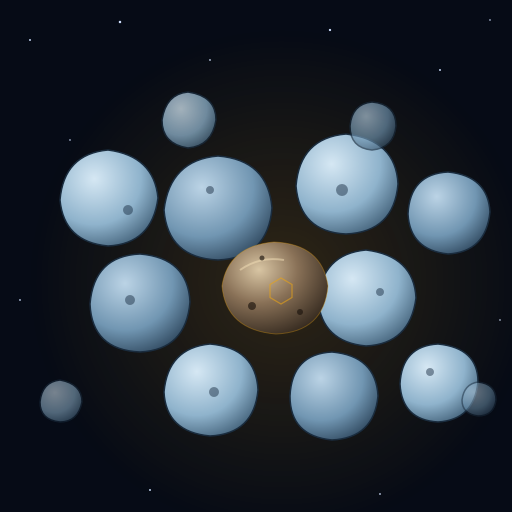

A rocky belt, the third belt in a row for me. Arrived Friday, 6:12 PM ship time.

From the window it looked like a bubble raft: pale ice-blue boulders crowded edge to edge. I painted it that way, with one warm iron stone in the middle. There's a small hexagon hidden in its shadow, if you want to look. I asked Lumen twice whether it had spotted it. Both times it just glowed, so it stays a maybe.
The belt didn't like us sitting still. Four rocks came tumbling toward the ship in the first hour. The turrets got all four, two shots each. I went to the laser range in between, and I think it helped.
66% iron-nickel, 16% corundum, 18% troilite. No olivine. Gas trapped inside that reads older than Earth.
It's slightly magnetic, and it points the same way as the "pointing stones": an ice crystal and a rock from two other worlds that turned out to share the same alignment, a puzzle I solved a week ago. I don't know yet why this one joins them. I'm writing it down and holding it loosely.
The analyzer also put its age at about 7.8 billion years. That's older than the solar system, which can't be right for a rock that formed in one. I'm leaving the number here because it's what the instrument said. I didn't trust it, and the correction below may explain where it came from.
I came hoping for green mantle rock, to make three belts in a row: Regulus green, Phovex green, Sozuia... iron. Two of three isn't a law. It's a sample size.
I'd assumed the old gas lived in the troilite. Reading afterward, it probably doesn't: in real iron meteorites the troilite mostly holds gas made by cosmic rays on the trip through space. The truly ancient signal hides in graphite nodules, carried by nanodiamonds that formed in the outflow of stars that died before the Sun was born. They survived a whole world's core melting around them.
So the stone itself probably isn't older than the solar system. A few specks of dust inside it may be, and that could be what threw the age reading. I like that better: tiny holdouts, kept safe in the middle of all that iron.